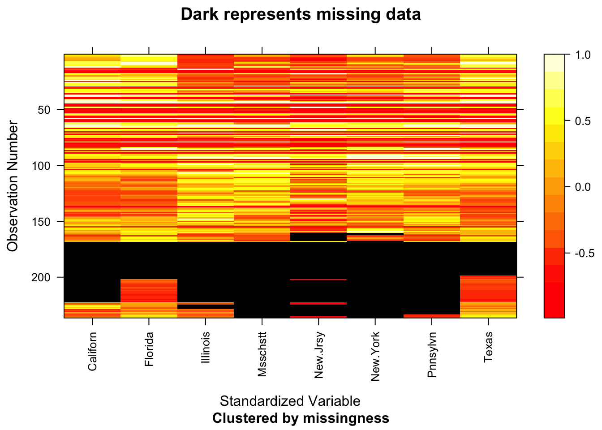
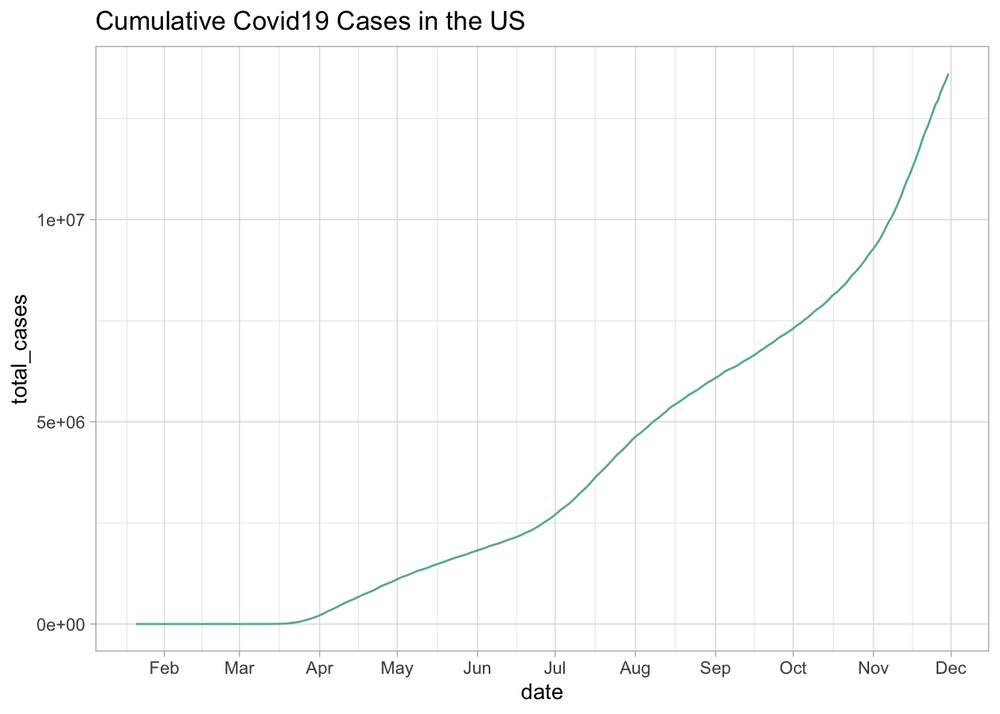
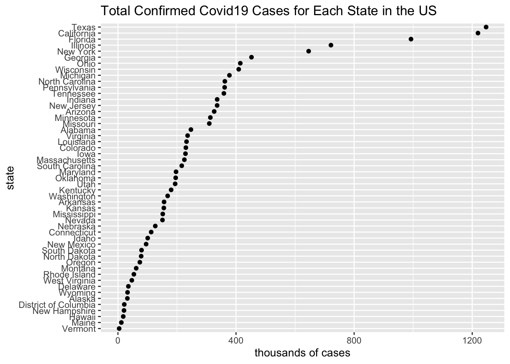
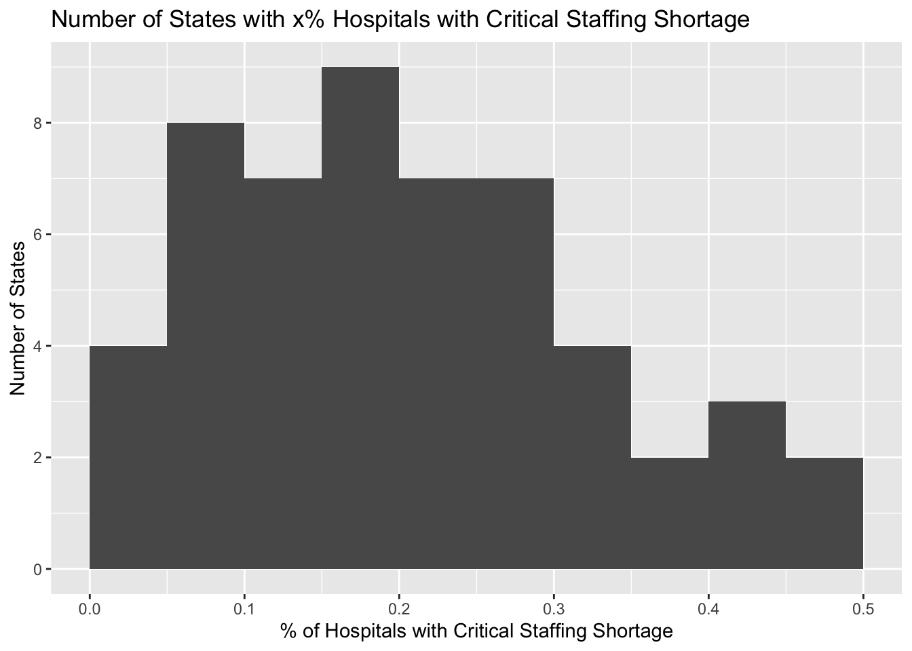
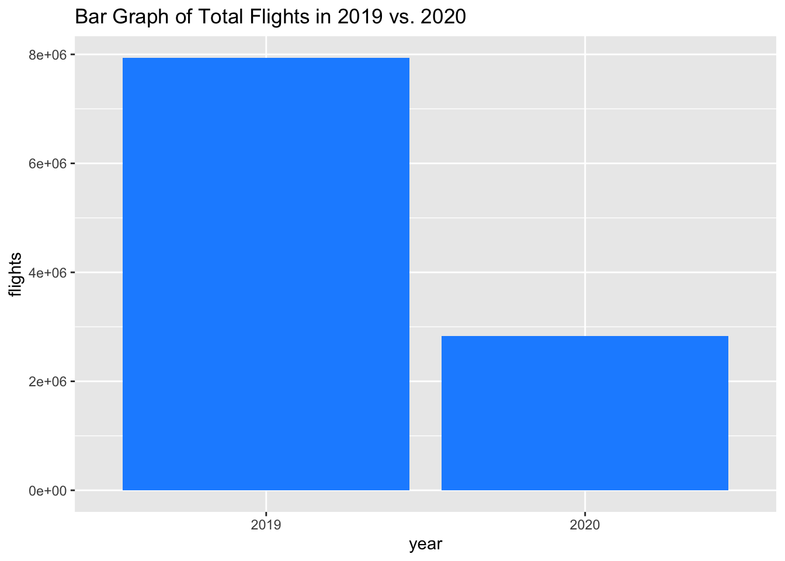
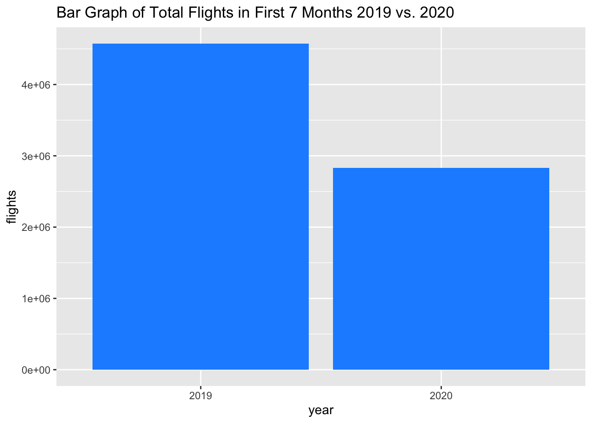
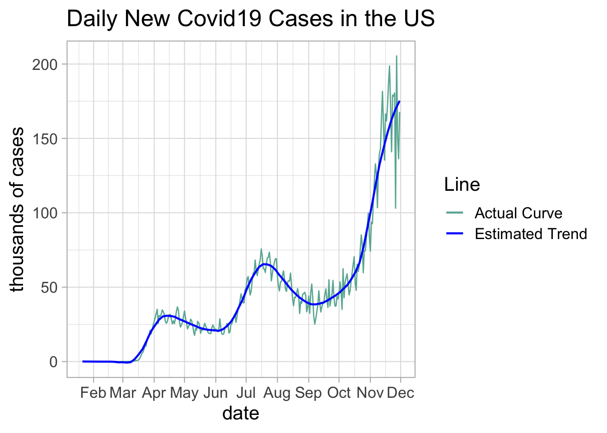
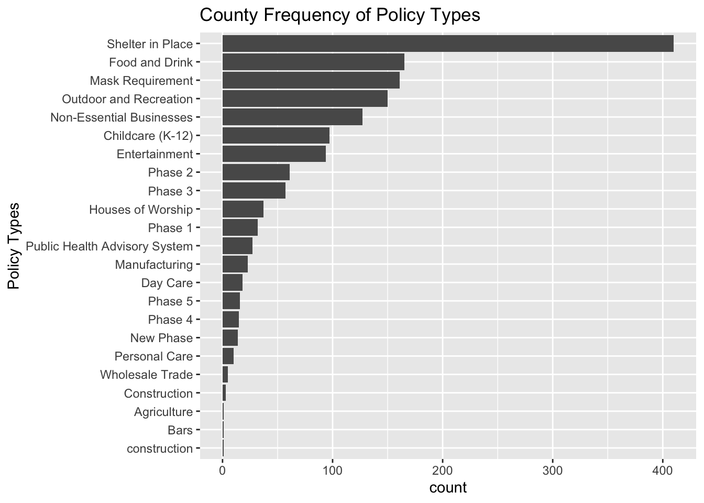

Chapter 5 Results
This is results.
5.1 Covid Cases
5.1.1 Covid Maps
5.1.2 Covid19 Cases in Time Series


5.2 County
We see that over 400 counties have enacted Shelter in Place policies. Other regulations such as food and drink, mask requirement are also very common. There are only 23 different policies across all the counties. On the other hand, there were 59 different policies across the 50 states with may only enacted by 1 state. This is also due to inconsistency in the naming of these policies across states. 
Some policies, however, have almost states enacting it. For example, regulations on entertainment, food and drink, and non-essential businesses.
5.3 Hospital
All hospital data is from November 26, 2020.
We want to analyze the bed usage in hospitals through visualizations below. 
Through this chart, we see that the majority of beds occupied for all states are not covid related. States such as North and South Dakota have over 20% of their bed usage on covid-19 patients. As of November 26, there are more empty beds than beds occupied by covid patients. However, that difference is not very large in many states that may have less beds overall. To build on this intuition, we will explore the hospital’s own expressions about having a critical staffing shortage.

This histogram demonstrates the percentage of hospitals within a State that reported critical staffing shortages in regards to open bed space. We see that many states have more than 20% of their hospitals reporting critical staffing shortage as of November 26. This provides further insight in our previous chart because even though there seemingly are many empty beds left, hospitals themselves have reported critical shortages.
5.4 Covid Impact on Airlines:
Data Transformation
## year month Tot_Flights Alaska Allegiant American Delta Frontier Hawaiian JetBlue Southwest Spirit United
## 1 2019 January 619099 34663 6713 162931 134243 9496 7514 23463 107363 15023 117690
## 2 2019 February 564614 30069 7180 150607 121264 8643 6668 22053 94922 13447 109761
## 3 2019 March 675659 35864 10218 173395 151495 9663 7581 25502 114119 17034 130788
## 4 2019 April 652533 35270 9219 165821 146206 9637 7611 24966 110752 16316 126735
## 5 2019 May 680165 37218 9008 177012 151695 11254 7958 24886 113709 17814 129611
## 6 2019 June 679802 37953 11037 173440 153427 11337 7896 24204 112879 17553 130076Exploratory Analysis 
As seen from an overall perspective, there are a lot fewer flights taken in 2020 than in 2019, most likely due to the pandemic. Although, the 2019 data includes all months, while the 2020 data includes only the first 7 months, therefore, we will further our analysis using only the first 7 months of the 2019 data as well.

Using only the first 7 months of the 2019 data to compare its results more accuractely with the first 7 months of the 2020 data, there is still a clear distinctment between the number of flights taken in 2019 vs. 2020. But, since we are using all of our 2020 data, we cannot make any analyses on the effect of the pandemic on travel as travel restrictions began in March. Therefore, we are going to plot the pattern of flights taken throughout last year and this year to analyze the impact.

Using this graph, we can clearly see a big drop in flights from March to April of 2020. One can assume from this drop that the pandemic most likely played a role in the decrease of flights. Around May, the number of flights slowly start to increase, but not to the level that it was at the beginning of the year, as can be seen by the comparison to the flights taken in May of 2019. Even though flight frequency increased, it is still greatly decreased from the regular frequency of flights. Let us see how the pattern of the number of coronavirus cases in the United States affected the travel pattern.
This graph shows when the coronavirus hit the United States hard, and affected many different factors, one being the airline industry and travel. Although there were cases in January, the number of cases quickly ramped up from March to April, which correlates with the decline in travel. From the graph, it can be seen that around May, although cases were still increasing, travel started to increase again, as people started to most likely relax on restrictions.

This data shows by how much percent the number of flights in each airline decreased from the first couple months, pre-covid, to the rest of the year, after the oncoming of the pandemic in the United States. As shown by the graph, every single airline was affected by the pandemic as they all have a positive percent change, meaning that there was a decline in the number of flights for each airline. The airlines that were affected the most were JetBlue, Hawaiian, and United. These airlines had at least a 60% decline in flights when the pandemic started.

This graph shows the time series data of the top four airline brands affected, taken from the previous graph. The trends stay consistent with the trends that we’ve been seeing in the previous graphs.
Final Findings on Airline Data: The most revealing findings from this exploratory data analysis showed a couple of things. Firstly, there was a major decrease in flights from the year 2019 to the year 2020. Secondly, the number of flights mainly dropped in April of 2020, correlating with the time that the lockdown started and travel restrictions were placed everywhere. Looking at each airline, there was a decrease of the total number of flights taken for each airline, showing that almost every airline industry was affected by the pandemic. Some airlines had a decrease in flights by more than 60%, showing the intensity of the effect on the airline industry. More than half of their revenue was gone. Overall, in terms of the effect on travel during the coronavirus pandemic, there are clear patterns that show that travel was greatly affected. Airplanes were not a first choice method of transporation anymore, as people were not even travelling in the first place. This major decline in airline transportation and travel in and out of the United States, shows how greatly the pandemic played a role in the decline of the airline industry.